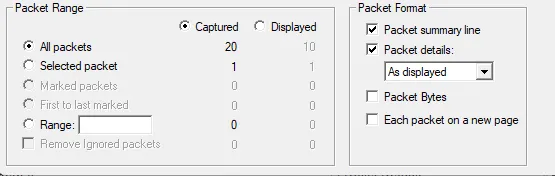

| command | descr |
|---|---|
| protocol_name | 按协议过滤
tcp bootp；DHCP不是dhcp |
| protocol_name.protocol_port | 按协议端口过滤
udp.port == 67 || udp.port == 68 |
| frame.number == n | 按帧编号过滤
frame.number >= 10 |
